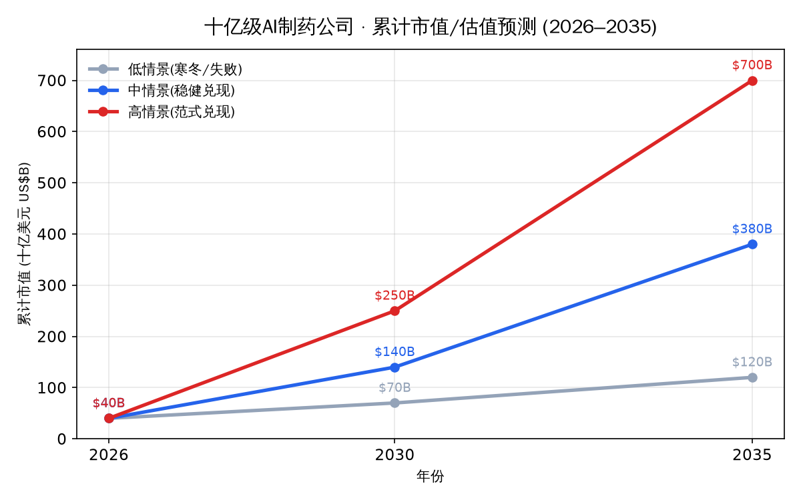
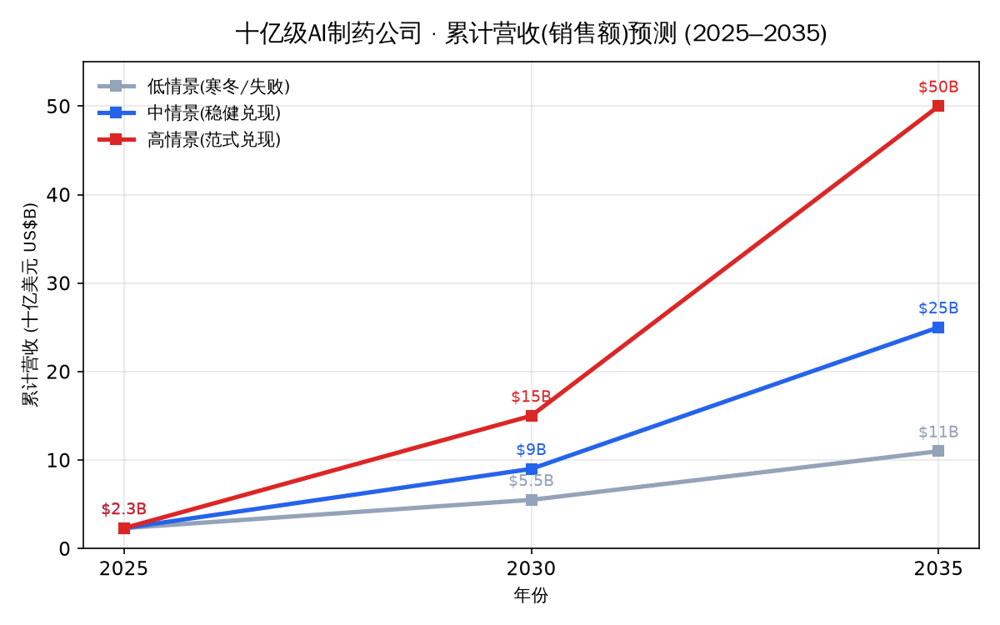
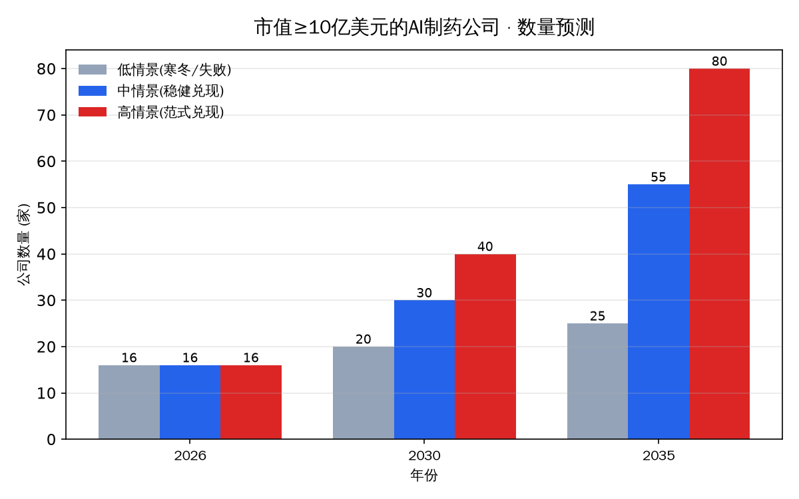
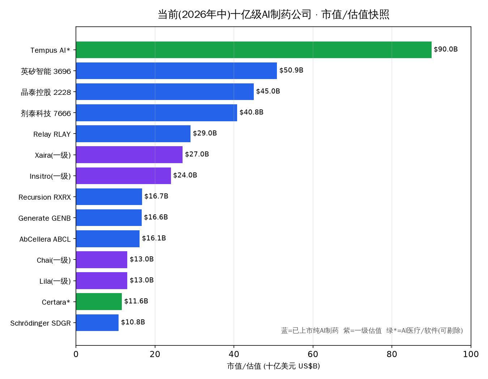
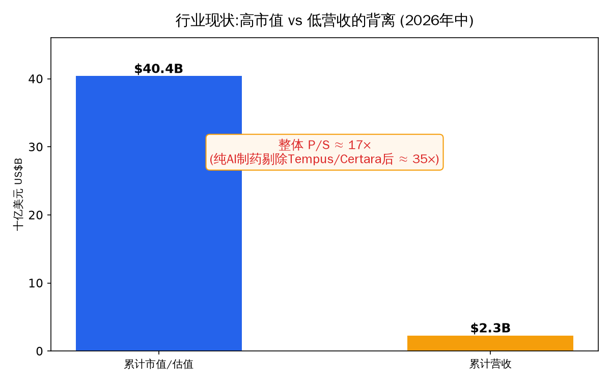
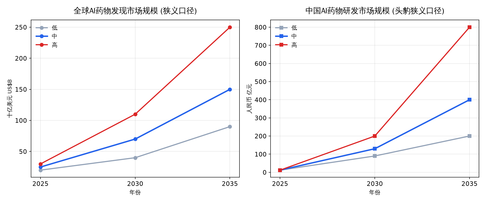

晶泰科技 · 英矽智能 · 剂泰科技 + 海外对标 + 未上市标的 + 市场预测
报告日期：2026-06-16 | 数据截至 2026-06-15 | 仅供投资研究参考，不构成投资建议
标的：晶泰科技（XtalPi, 02228.HK）｜英矽智能（Insilico Medicine, 03696.HK）｜剂泰科技（METiS TechBio, 07666.HK）
报告日期：2026-06-15｜用途：投资尽调参考
数据可靠性总声明：本报告由多路并行网络检索（中英文，数百次搜索）交叉验证而成。研究过程中，大量一手页面（港交所招股书PDF、公司官网、SEC文件、券商研报PDF、企查查等）对自动抓取返回 403，故许多精确数字依赖搜索引擎对这些页面的结构化摘要，并经 2 个及以上独立来源交叉印证。凡标注【已核实】为多源一致；标注【存疑/待核实】或【未找到公开数据】者请勿当作定论。所有载入投资决策的关键数字，务必以港交所披露易（HKEXnews）的招股书与经审计年报原文最终复核。
| 维度 | 晶泰科技 02228.HK | 英矽智能 03696.HK | 剂泰科技 07666.HK |
|---|---|---|---|
| 成立 | 2015，深圳 | 2014，美国马里兰 | 2019孵化/2020注册，杭州 |
| 创始人 | 温书豪、马健、赖力鹏（MIT博士后） | Alex Zhavoronkov（拉脱维亚裔） | 赖才达、陈红敏、王文首（MIT背景） |
| 上市 | 2024-06-13（港股18C第一股） | 2025-12-30（主板盈利测试，非18A） | 2026-05-13（18C，三小龙最晚） |
| 发行价/募资 | 5.28港元 / 净募约8.96亿港元 | 24.05港元 / 募22.77亿港元 | 10.50港元 / 募约21.1亿港元 |
| 首日表现 | +9.85% | +24.66%（开盘涨超45%） | +126.67%（盘中涨超180%） |
| 公开认购倍数 | 超100倍 | 1427倍 | 逾6900倍 |
| 2025营收 | 8.03亿元（+201%） | 5624万美元（同比降约34%） | 1.05亿元（2024仅148万元） |
| 2025盈亏 | 净利1.35亿元（首次年度盈利） | IFRS净亏3.52亿美元*；调整后亏4383万美元 | 净亏3.92亿元 |
| 现金储备 | 约53亿元（2025-06-30） | 约3.93亿美元（2025-12-31） | 约11.3亿元（2025-12-31，未含IPO款） |
| 上市前累计融资 | 约7.85亿美元 | 约5.85亿美元（主要股权口径） | 超3亿美元（约20亿元） |
| 商业模式 | 平台/CRO赋能（干湿一体） | 自研管线 + 软件授权 | 平台合作 + 产品授权 |
英矽IFRS巨额净亏主要为可转换优先股上市转换的一次性非现金公允价值损失（约2.97亿美元），经营性亏损实为约4383万美元。晶泰的盈利亦含约5.14亿元金融资产公允价值收益*，剔除后经营仍承压——三家财报都务必看"调整后/经营性"口径。
| 轮次 | 时间 | 金额 | 估值 | 主要投资方 |
|---|---|---|---|---|
| 早期 A/B 等 | 2015–2019 | — | — | 腾讯、红杉等早期入场 |
| C 轮 | 2020-09 | 约 3.188 亿美元 | 投前约 13 亿美元 | 五源资本、软银愿景、中国人保、中金、招银国际、中信资本 |
| D 轮 | 2021-08 | 4 亿美元 | 约 20 亿美元 | 奥博资本(OrbiMed) + 厚朴投资(HOPU) 联合领投 |
底层逻辑：量子物理 + AI + 自动化机器人，形成 DMTA（设计-智造-测试-分析）闭环。 - ID4Inno™：智能化自动化小分子药物发现平台（含 AI 引擎 ID4Idea™ 与高精度计算化学引擎 ID4Gibbs™，搭载 500+ AI 模型）。 - XupremAb™（抗体发现）、ChemArt™（人机结合化学合成）、XtalCSP™（晶型预测，起家技术）、XtalDynamics™（实验室自动化）。 - 自动化实验室：数百台机器人工作站，自动合成与生化/药理药代测试，数据实时反馈算法迭代。 - 模态覆盖：小分子、抗体、多肽、ADC、分子胶。 - 两大业务分部：①药物发现解决方案；②智能自动化（机器人）解决方案（含新材料）。
| 年度 | 收入 | 净亏损/净利润 | 备注 |
|---|---|---|---|
| 2021 | 0.63 亿 | 净亏 21.37 亿 | 亏损主因优先股公允价值变动 |
| 2022 | 1.33 亿 | 净亏 14.39 亿 | |
| 2023 | 1.74 亿 | 净亏 19.06 亿 | |
| 2024 | 2.66 亿（+53%） | 净亏约 15.2 亿 | |
| 2025 H1 | 5.17 亿（+403.8%） | 期内利润 0.76 亿；调整后净利 1.42 亿 | 首次半年度盈利 |
| 2025 全年 | 8.03 亿（+201.2%） | 净利 1.35 亿（扭亏）；调整后净利 2.58 亿 | 首个完整年度盈利 |
三位联合创始人（均 MIT 博士后）： - 温书豪（董事长）：中科院物理学博士，UC/MIT 博士后。 - 马健（CEO）：浙大物理学博士、MIT 博士后；2019 年入选《麻省理工科技评论》"35 岁以下创新 35 人"。 - 赖力鹏（首席创新官）：北大物理+数学双学士、芝加哥大学物理博士、MIT 博士后。
IPO 时点股权（注：经 2025 年多次大额配售已被稀释，最新精确比例待核实）： - 三位创始人合计约 21.46%（温书豪系 15.27%、马健系 3.61%、赖力鹏系 2.58%）。 - 腾讯 12.91%、红杉 7.8%、五源资本 7.51%、国寿成达 6.91%、人保健康养老 3.51%；其他前期投资者 34.4%；公众 5.5%。
| 轮次 | 时间 | 金额 | 投后估值 | 领投/关键方 |
|---|---|---|---|---|
| A | 2018-06 | 约 600 万美元 | 5440 万美元 | Bold Capital、药明康德、Pavilion、Juvenescence |
| B | 2020 | 约 3680 万美元 | 1.07 亿美元 | 启明创投领投；Eight Roads、礼来亚洲、创新工场、百度风投 |
| C（含C1/C2/C+） | 2021-06 | 2.55 亿美元 | 5.7–5.85 亿美元 | 华平投资领投；启明、Eight Roads、创新工场、红杉 |
| D（两次交割） | 2022 | 约 9500 万美元 | 8.95 亿美元 | 华平、波士顿投资、启明、BOLD、Deerfield |
| E（IPO前最后一轮） | 2025-02 | 1.23 亿美元 | 约 13.31 亿美元 | 浦东创投、华平、奥博、Lilly Ventures、Prosperity7(沙特阿美)、惠理 |
端到端生成式 AI 药物发现平台，核心模块： - PandaOmics：靶点与生物标志物发现引擎（多组学+文本，23 个疾病特异性 ML 模型，内置 ChatPandaGPT）。2025 升级 TargetPro/TargetBench 框架（覆盖 38 种疾病）。 - Chemistry42：生成式小分子设计平台（多模态生成式强化学习 + 基于结构的生成化学；含 7 个子应用：分子生成、自由能预测、ADMET、逆合成等）。默克（Merck KGaA）已部署。技术源头可追溯至 2014 年 GAN、2016 年首篇 GAN 应用于小分子发现论文、早期模型 GENTRL。 - inClinico：临床试验结果预测（transformer，训练于 7 年 5.56 万+ II 期试验；准前瞻验证 ROC AUC 0.88，论文发表于 Clinical Pharmacology & Therapeutics 2023，非 Nature Medicine）。 - Generative Biologics（2024-07 推出，从头蛋白质/抗体工程，与和铂医药合作）、nach0/Nach01（化学-生物 LLM，与 NVIDIA BioNeMo 合作，2025-06 上线 AWS Marketplace）、Precious2/3GPT（衰老生命模型，发表于 npj Aging）、Science42: DORA（科研写作智能体）。
| 合作方 | 日期 | 资产 | 预付款 | 总额（含里程碑，biobucks） |
|---|---|---|---|---|
| 赛诺菲 Sanofi | 2022-11 | 多靶点（≤6 个） | 约 2150 万美元 | 最高 12 亿美元 |
| 复星医药 Fosun | 2022 | QPCTL/ISM8207 等 5 项 | 约 1300 万美元 | 约 9500 万美元 + 股权 |
| Exelixis | 2023-09 | ISM3091/XL309（USP1 抑制剂） | 8000 万美元 | 80M + 未披露里程碑/特许权 |
| Menarini/Stemline #1 | 2024-01 | MEN2312（KAT6 抑制剂） | 1200 万美元 | 5 亿美元+ |
| Menarini/Stemline #2 | 2025-01 | 临床前肿瘤资产 | 2000 万美元 | 5.5 亿美元+ |
| Servier | 2025/2026 | 肿瘤 | 未披露 | 最高 8.88 亿美元 |
| 礼来 Eli Lilly（扩展） | 2026-03-29 | 全球管线授权 + AI 合作 | 1.15 亿美元 | 最高 27.5 亿美元（刷新 AI 制药纪录） |
| 齐鲁制药 Qilu | 2025 | 心血管代谢领域 | 未披露 | 近 1.2 亿美元规模 |
| 衡泰生物 | 2026-01 | ISM8969（NLRP3 抑制剂） | 1000 万美元 | 约 6600 万美元（单位有歧义） |
| 年度 | 总营收 | IFRS 净亏损 | 调整后亏损 | 研发费用 |
|---|---|---|---|---|
| 2022 | 3015 万 | 约 2.22 亿* | — | 7820 万 |
| 2023 | 5118 万 | 约 2.12 亿* | — | 9730 万 |
| 2024 | 8583 万 | 约 1710–1740 万 | 约 2267 万 | 9190 万 |
| 2025 | 5624 万（−34.5%） | 3.52 亿* | 4383 万 | 8138 万（−11.4%） |
巨额 IFRS 净亏主要由可转换优先股公允价值变动（非现金）驱动；2025 年其中约 2.97 亿美元为上市时优先股转换的一次性损失。调整后 non-IFRS 亏损更反映经营实质。*
名称重要更正：英文官方写法 METiS（i 小写），上市主体 METiS TechBio Co., Ltd.。"MediTrust" 与 "MedTai" 均为错误名称——MediTrust Health 是另一家无关的中国医药支付/保险公司（博裕系），务必勿混淆。中文上市主体"剂泰科技（北京）股份有限公司"，港股简称"剂泰科技-P"，代码 07666.HK（2576 系错误代码）。名称取自希腊智慧女神 Metis（雅典娜之母）。
| 轮次 | 时间 | 金额 | 领投/关键方 |
|---|---|---|---|
| 天使轮 | 2020-03 | 数百万美元 | 峰瑞资本领投；源码资本、晶泰科技 |
| 天使+/Pre-A | 2020-12 | 合计"过亿元" | 红杉中国、光速中国领投；五源资本 |
| A+B（连续两轮） | 2022-04 | 合计 1.5 亿美元 | 人保资本、国寿股权领投；红杉、五源、招银国际、光速、Monolith、峰瑞 |
| C 轮 | 2024-06 | 1 亿美元 | 中金资本旗下基金领投；太平香港保险科创基金 |
| D 轮 | 2025-08 | 4 亿元人民币 | 北京市医药健康产业基金、大兴区产业基金联合领投 |
母平台 NanoForge（2025-09 发布，号称"全球首个 AI 纳米递送平台"），三大子平台： - AiTEM：AI 驱动小分子制剂/递送设计（高通量筛选 + 量子力学/分子动力学模拟，自动生成处方工艺；宣称将临床前制剂开发从 1–2 年缩短至 3 个月内）。 - AiLNP：AI 驱动核酸递送（LNP）设计（可电离脂质生成、配方优化）。 - AiRNA：AI 驱动 mRNA 序列设计。 - 数据资产：千万级（1000 万+）脂质结构库、100+ 专利、已实现 8 个器官/组织靶向 LNP 递送（肝、肺、免疫器官、心、肌肉、肿瘤、CNS、胃肠道）；含自研脂质语言模型 METiSLipidLM。
代号更正：现主用 MTS-xxx 命名（非用户提供的 JT001/JTV001；JT001 系 ClinicalTrials.gov 早期登记代号，可能对应 MTS-004 早期，但官方未证实）。
方向：口服小分子（AiTEM）+ mRNA 核酸疗法（AiLNP+AiRNA）+ LNP 递送对外赋能。超 10 条管线（1 个 pre-NDA、3 个临床、4 个临床前、2 个动保）。
| 管线 | 机制 | 适应症 | 阶段 |
|---|---|---|---|
| MTS-004 | 右美沙芬/奎尼丁口崩片，2.2 类改良新药 | 假性延髓情绪失控（PBA） | III 期达主要终点（2025-10），拟 2026 报 NDA；国内首款完成 III 期的 AI 赋能制剂新药 |
| MTS-201 | 口服 TGR5 激动剂（FIC） | MASH、糖尿病、肥胖、结肠炎 | I 期 |
| MTS-105 | mRNA 编码 TCE，肝靶向 LNP | 肝癌及肝转移晚期实体瘤 | IIT/IND 阶段，已获 FDA 孤儿药资格 |
| MTS-108 | mRNA 三特异性 TCE | 小细胞肺癌 | 临床前（AACR 2026） |
| MTS-109 | mRNA 三特异性 TCE（CD19×BCMA×CD3，FIC） | B 细胞肿瘤+自身免疫 | 临床前（AACR 2026） |
商业模式："平台合作 + 产品合作"双轮，已向全球超 30 家药企/Biotech 开放平台。 - License-OUT — MTS-004 → 浙江引安医药（2025-09）：首付款 1 亿元（2025-02 到账）+ PBA 里程碑最高 8.45 亿元 + 拓展适应症最高 1 亿元（合计约 18.45 亿元）+ 中高双位数分级特许权。这是 2025 年营收主来源。 - License-IN — 从 Ardelyx 引进 TGR5 激动剂（2023-04，对应 MTS-201）：首付款 75 万美元 + 里程碑最高 2.43 亿美元 + 分级特许权。 - 平台合作：单个靶点合约金额最高达 1.09 亿美元（合作方未具名）。 - 存疑/未找到：与罗氏、华海药业的合作仅见二手报道，无官方确认；与默克/礼来合作未找到证据；完整 30+ 合作方具名清单未公开。
| 指标 | 2023 | 2024 | 2025 |
|---|---|---|---|
| 营收 | 约 934 万 | 约 148 万 | 约 1.05 亿 |
| 净亏损 | 5.82 亿 | 4.99 亿 | 3.92 亿 |
| 毛利率 | — | 55.5% | 98.2% |
纠正：用户提到的"高萌"未找到任何创始人/高管记录（疑为误信息）；导师为 Bernhardt Trout / Allan Myerson（非 Langer/Anderson）。
三位联合创始人（均 MIT 背景）： - 赖才达（董事长兼 CEO）：约 1989 年生，MIT 化学工程博士，师从 Bernhardt Trout 院士与 Allan Myerson 教授（药物结晶/连续制造）；曾任晶泰科技 Active COO。 - 陈红敏（美国公司总裁兼 CRDO）：美国工程院院士，MIT 化工博士；曾联合创立 TransForm（2005 被强生收购）、Kala 制药（2017 纳斯达克上市，任 CSO）。 - 王文首（COO）：曾任 MIT CSAIL 研究科学家，联合创办 3D 打印创企 Inkbit。 - 其他高管：CFO 付翀、CSO 徐巍。
IPO 前股权（招股书披露）： - 创始团队合计约 30.67%：赖才达 12.75%、陈红敏 7.03%、王文首 3.67%。 - 主要机构：中金康瑞 7.62%、红杉系合计约 6.89%、人保健康养老 5.29%、LS Metis 4.54%、Martis Fund 4.48%。
晶泰 02228（平台/CRO，唯一盈利） - 亮点：2025 首次年度盈利；DoveTree 超级大单背书；干湿一体平台壁垒；腾讯持股；业务可外溢至材料科学。 - 风险：盈利含大额公允价值收益、质量存疑；营收依赖单一大单；业务边界模糊（延伸至农药/OLED/电池电解液）；股价从高点大幅回落、解禁压力；曾以 52.9 倍 PE 收购四维医学被指偏高。
英矽 03696（自研管线，最具创新药叙事） - 亮点：管线最快（Rentosertib 进 III 期、Nature Medicine 背书）；多项授权累计潜在超 66 亿美元 biobucks（含礼来 27.5 亿、赛诺菲 12 亿）；软件覆盖全球前 20 大药企中 13 家；IPO 超额认购 1427 倍、礼来/腾讯/淡马锡等顶级基石。 - 风险：持续大额亏损、现金虽因 IPO 改善但烧钱快；管线均未过 II 期终点（临床失败=核心风险）；收入依赖少数授权、波动大；"四闯港交所"反映上市之路不顺。
剂泰 07666（递送细分龙头，认购最火） - 亮点：AI 药物递送"第一股"稀缺性；MTS-004 完成 III 期、填补国内 PBA 空白；超 6900 倍认购、红杉连续 5 轮加持；平台+产品双轮。 - 风险：营收 99% 靠单笔授权首付款、可持续性最受质疑；平台经常性收入未兑现；估值溢价依赖 NanoForge 不可替代性、专利强度、被模仿难度等强假设；首日暴涨后回调风险大。
最终复核来源：港交所披露易（HKEXnews）三家招股书与经审计年报原文；晶泰 ir.xtalpi.com、英矽 insilico.com、剂泰招股书。本报告二手数字用于框架与交叉验证，关键决策数字请回到一手披露文件。
（本报告基于截至 2026-06-15 的公开信息整理，不构成投资建议。）
配套《医药AI三小龙投资产研报告》的补充篇｜报告日期：2026-06-15
数据可靠性声明：本篇由多路并行检索（中英文，约 60+ 次搜索）交叉验证。一手页面（招股书、官网、SEC）抓取受限时，关键数字依赖搜索引擎摘要并经多源印证。【已核实】=多源一致；【存疑/未找到】=请勿当定论。未上市公司估值普遍未公开披露，凡"未披露"为如实标注，未作推算。 实时市值/股价请以行情终端为准。
一句话结论：晶泰对标 Schrödinger + Recursion（计算平台+自动化）；英矽对标 Generate:Biomedicines + Xaira（生成式AI+自研管线）；剂泰全球几乎无完全对位者——这是它最独特、也最难做估值锚定之处。
| 公司 | 上市/状态 | 最近融资 / 市值 | 方向与看点 |
|---|---|---|---|
| Schrödinger | NASDAQ: SDGR（2020上市） | 市值约 11–13 亿美元；2025 营收 2.56 亿美元(+23%) | 物理基础模拟(FEP)+AI，软件授权+自研管线双轮，最贴近晶泰的"计算底座"；正从纯软件向授权/里程碑转型 |
| Recursion | NASDAQ: RXRX（2021上市） | 2024-11 以约 6.30 亿美元全股票收购 Exscientia | 高通量自动化湿实验室+细胞图像(phenomics)大数据+AI，自动化+数据闭环最像晶泰；合并后约10条临床读出，现金可支撑至2027 |
| Exscientia | 已被 Recursion 收购（原 EXAI） | — | 英国生成式AI药物设计先驱，2024-11 并入 Recursion，独立实体消失 |
| Isomorphic Labs | 未上市（Alphabet/DeepMind 旗下） | 2025-03 首轮外部融资 6 亿美元（Thrive Capital 领投，GV、Alphabet 参与） | 基于 AlphaFold 的下一代AI药物设计引擎；与礼来、诺华合作+自研肿瘤/免疫管线。（注："21亿美元一轮"未获官方证实，存疑，以6亿美元为准） |
| Iambic Therapeutics | 未上市 | B轮累计超 1.5 亿美元（2023-10 1亿+2024-06 5000万扩展，NVIDIA/Mubadala/QIA） | AI+闭环自动化高通量实验+自研肿瘤管线；IAM1363（脑渗透HER2，IND仅约8个月） |
| Cradle Bio | 未上市（荷兰/瑞士） | 2024-11 B轮 7300 万美元（IVP领投），累计超1亿美元，估值未披露 | 生成式AI蛋白质工程SaaS+自建湿实验室；21家客户含J&J、诺和诺德 |
| Chai Discovery | 未上市 | 2025 B轮 1.3 亿美元，估值 13 亿美元（OpenAI加持），累计约2.25亿美元 | AI生物分子结构预测/抗体设计基础模型(Chai-1/Chai-2)，明星新锐 |
| Iktos（法国） | 未上市 | 2023 €1550万 A轮；2025 EIC €250万赠款 | 生成式AI化学+机器人合成(AIR-3D)，"AI+机器人"闭环与晶泰路线近，规模小；50+药企合作 |
| 公司 | 上市/状态 | 最近融资 / 市值 / IPO | 方向与看点 |
|---|---|---|---|
| Generate:Biomedicines | NASDAQ: GENB（2026-02 IPO） | IPO 募 4 亿美元（16美元/股），估值约 19.1 亿美元，当年最大生物科技IPO；IPO前已募约7亿美元 | 生成式生物学+可扩展"biohardware"设计蛋白疗法，最贴合英矽；GB-0895（AI工程化长效抗TSLP，2026启动全球Ph3） |
| Eikon Therapeutics | NASDAQ: EIKN（2026-02 IPO） | IPO 募 3.81 亿美元（18美元/股），估值约 8.6–10 亿美元 | 超分辨显微+单分子追踪+AI，实验数据驱动（非纯生成式）+自研肿瘤管线；诺奖得主Eric Betzig联创 |
| Xaira Therapeutics | 未上市（重点） | 2024-04 带超 10 亿美元出道（ARCH、Foresite领投，红杉/NEA/Lightspeed等） | David Baker团队RFdiffusion设计"难成药"靶点，英矽量级"超级Biotech"；CEO为前Genentech CSO/前斯坦福校长 |
| Insitro | 未上市 | 2021 C轮 4 亿美元，估值约 24 亿美元；累计约6.43亿美元（近两年无新轮） | ML+大规模功能基因组学/细胞图像+自研管线；创始人Daphne Koller（斯坦福ML） |
| Genesis Therapeutics | 未上市 | 2023-08 B轮 2 亿美元（a16z领投，NVIDIA参与），累计超2.8亿美元，估值未披露 | 生成式+预测式AI平台GEMS+自研管线；与吉利德/Incyte合作 |
| Absci | NASDAQ: ABSI（2021上市） | 现金>1.44亿美元可支撑至2028H1 | 生成式AI从头抗体设计(de novo)+湿验证；25+项目，3个临床；2026推出Origin-1 |
| Relay Therapeutics | NASDAQ: RLAY（2020上市） | 市值约 12–15 亿美元；现金约7.1亿美元可至2029 | "蛋白质运动"计算+实验融合；RLY-2608（PIK3CA抑制剂）获FDA突破性疗法 |
| Valo Health | 未上市 | 2021 SPAC上市(28亿美元估值)告吹，累计约5.95亿美元；近两年无新大轮 | Opal人体数据驱动平台+自研管线；与诺和诺德合作 |
| Lila Sciences | 未上市（重点） | 累计 5.5 亿美元，估值超 13 亿美元（A轮2.35亿+2025-10追加1.15亿，NVIDIA参与） | "科学超级智能"+全自主AI实验室，范围比药物发现更宽；Flagship系 |
| BenevolentAI | 已退市（反面教材） | 2025-03 私有化退市 | 知识图谱+AI，曾为欧洲旗舰；管线折戟+多轮裁员后并入Osaka Holdings私有化 |
关键判断：剂泰"AI计算生成可电离脂质 + LNP材料设计 + 制剂"的整合度，全球没有一家完全对位的上市/独角兽公司。海外格局分三股力量，剂泰把它们打通的程度较独特。
| 公司 | 上市/状态 | 最近融资 / 进展 | 方向（与剂泰的关系） |
|---|---|---|---|
| Acuitas Therapeutics | 未上市 | 与辉瑞授权LNP用于≤10个mRNA靶点；融资细节未取 | 临床验证级LNP龙头（非AI原生）；其脂质ALC-0315是辉瑞/BioNTech新冠疫苗核心 |
| Genevant Sciences | 未上市（Roivant系） | 2026-03 与Moderna达成 22.5 亿美元LNP专利和解（Moderna付9.5亿首付+授权） | LNP递送平台（非AI原生），LNP IP极强 |
| Strand Therapeutics | 未上市 | 2025-08 B轮 1.53 亿美元（Kinnevik领投），累计超2.5亿 | 可编程mRNA+自研肿瘤管线；STX-001（瘤内IL-12 mRNA，Ph1有完全缓解） |
| Replicate Bioscience | 未上市 | 累计约4700万美元；2025-08与诺和诺德合作至多5.5亿美元 | 自复制RNA(srRNA)平台 |
| EvolutionaryScale | 未上市 | 2024-06 超1.42亿美元种子（Lux领投，Amazon/NVIDIA） | Meta ESM团队分拆，最大蛋白语言模型ESM3（AI生成生物分子，理念与剂佐相通） |
| Profluent Bio | 未上市 | 2025-11 B轮 1.06 亿美元（Altimeter/Bezos），累计约1.5亿 | AI蛋白/基因编辑设计(OpenCRISPR-1，发表于Nature) |
| 纯AI-LNP新锐 | 多为早期/学术 | Mana(1450万种子)、Persist、宾大LIBRIS(学术) | 海外"AI原生LNP设计"仍稀少偏早期，剂泰在此赛道全球领先 |
| 中国公司 | 模式 | 最贴近海外对标 | 其他参照 |
|---|---|---|---|
| 晶泰科技 | 量子物理+AI+机器人平台/CRO | Schrödinger（计算底座）、Recursion（自动化+数据闭环） | Isomorphic、Iambic、Iktos、Cradle、Chai |
| 英矽智能 | 端到端生成式AI+自研管线 | Generate:Biomedicines（2026 IPO估值19亿美元）、Xaira（10亿美元级） | Insitro、Genesis、Eikon、Absci、Relay、Lila、Valo；反面=BenevolentAI |
| 剂泰科技 | AI生成脂质+LNP/递送+制剂 | 无完全对位者；近似=Acuitas/Genevant(LNP龙头,非AI)+Strand/Replicate(mRNA) | EvolutionaryScale、Profluent、Cradle（AI生成生物分子） |
两家最接近上市、最值得优先观察： - 百图生科 BioMap（李彦宏）：2026-03 已以保密形式向港交所递表，拟募数亿美元（中金/摩根士丹利/瑞银协助）。 - 华深智药 Helixon / Earendil Labs（彭健，清华）：2026-03 Earendil 完成 7.87 亿美元融资（刷新2026全球Biotech纪录），传考虑赴港上市拟募至多约5亿美元，且赛诺菲BD累计超44亿美元。
边界提示：英矽智能(3696.HK)、剂泰科技(07666.HK)均已上市，不在此列；锐格医药(Regor)未上市但核心CDK管线已被罗氏8.5亿美元首付收购。
| 公司 | 成立 | 创始人 | 方向 | 最近融资（时间/金额/领投） | 估值 | IPO状态 |
|---|---|---|---|---|---|---|
| 百图生科 BioMap ⭐ | 2020 | 李彦宏、刘维 | 生命科学大模型 xTrimo(~2680亿参数) | 2024 港投公司领投新一轮(金额未披露)；累计>2亿美元 | 未披露 | 2026-03 秘密递表港交所 |
| 华深智药 Helixon / Earendil ⭐ | 2021 | 彭健(清华)、朱祯平 | AI抗体/多抗设计 | 2022-06 A轮近5亿元(五源领投)；2026-03 Earendil 7.87亿美元 | 未披露 | 传2026考虑赴港(募至多~5亿美元) |
| 分子之心 MoleculeMind | 2022 | 许锦波("AI蛋白折叠奠基人") | 蛋白质设计大模型MoleculeOS/NewOrigin | 天使数千万美元(红杉领投)；2024-09 A轮数亿元 | 未披露 | 无 |
| 百奥几何 BioGeometry | 2022 | 唐建(Mila终身教授)，顾问Bengio | 生成式蛋白从头设计GeoFlow | 2026-06 数亿元战略融资(上海生物医药基金等，高瓴参与) | 未披露 | 无（成立晚） |
| 深势科技 DP Technology | 2018 | 孙伟杰、张林峰 | AI for Science(Uni-Mol/Hermite/Bohrium) | 2025-12 C轮 8 亿元(达晨/联想创投/北京AI基金等) | 未披露(估值3年涨数十倍) | 无明确 |
| 智峪生科 ZelixIR | 2021 | 王晟(中科院理论物理博士) | AI蛋白结构计算/设计ZCloud+合成生物 | 2023-05 超亿元A轮(青岛清池领投)，累计>2亿元 | 未披露 | 无 |
| 天鹜科技 TindeMol | 2021 | 洪亮(上海交大) | AI蛋白设计AccelProtein | A轮超亿元(启明领投)；Pre-A数千万(金沙江) | 未披露 | 无 |
| 望石智慧 StoneWise | 2018 | — | AI小分子生成/设计 | 2021-04 B/B+轮 1亿美元（一年近8亿元）；2022后无新轮(存疑) | 未披露 | 无 |
| 星药科技 Galixir | 2019 | — | AI小分子平台Pyxir | 2021-08 B轮(上海AI基金领投)；2022后无新轮(存疑) | 未披露 | 无 |
| 碳硅智慧 CarbonSilicon | — | 侯廷军(浙大)、邓亚峰 | 新药SaaS平台DrugFlow(3.0于2026-04发布) | 2022-09 天使5000万元(联想创投)；后无A轮(存疑) | 未披露 | 无 |
| 燧坤智能 Procyon | — | 刘建(恒瑞美研前CSO) | AI药物研发平台 | 2021 A轮超亿元；后无新轮(存疑) | 未披露 | 无 |
| 阿尔法分子 AlphaMol | 2020 | Horst Vogel院士、袁曙光 | 生物计算+AI，GPCR新药 | 种子数千万元；A轮(上海生物医药基金领投) | 未披露 | 无 |
| 西湖欧米 Westlake Omics | 2020 | 郭天南(西湖大学) | AI+蛋白质组学/质谱诊断 | 2022-01 数亿元Pre-A(倚锋/高瓴创投领投) | 未披露 | 无 |
| 公司 | 成立 | 创始人 | 方向/赛道 | 最近融资 | IPO状态 / 备注 |
|---|---|---|---|---|---|
| 锐格医药 Regor | 2018 | 资深药物发现科学家 | 计算驱动小分子rCARD(肿瘤/免疫/代谢) | B轮 9000万美元(礼来亚洲领投) | 未IPO；2024-09核心CDK管线被罗氏/基因泰克收购，首付8.5亿美元 |
| 费米子 Fermion | 2019 | 邓代国(中山大学计算机博士) | AI+小分子(CNS/自免)FermiNet，13条管线 | B轮超亿元，累计数亿元(创新工场等) | 未IPO；镇痛药FZ008-145授权健康元 |
| 德睿智药 MindRank | ~2018 | AI+药化团队 | AI小分子Molecule Pro | 2023-07 A+轮超2000万美元(谢诺领投) | 未IPO；MDR-001已入I期 |
| 英飞智药 | 2019 | 裴剑锋(北大) | AI小分子PharmaMind/TopTargets | Pre-A(丽珠系)；2024后新轮未找到(存疑) | 未IPO |
| 宇道生物 ICAREDOX | 2013 | 张健(变构药物)、沈倩诚 | AI+变构(别构)药物，FIC小分子 | 2021-06 A轮2000万美元；2022-03 A+轮4000万美元 | 未IPO |
| 新合生物 Neocura | 2017 | 王弈、周亚辉 | AI+mRNA肿瘤新抗原疫苗ALPINE | 2021-12 A+轮5亿元(人保资本/周亚辉领投) | 未IPO；10+管线 |
| 未知君 Xbiome | 2017 | 谭验(计算生物学) | AI+微生物组/FMT/活菌药 | 2021-12 近1亿美元B系列 | 未IPO；XBI-302获FDA IND |
| 埃格林医药 Evergreen | 2019 | 杜涛 | AI赋能临床研发(肿瘤/眼科) | 2024-06 A+轮(软银中国/烟台基金，金额未披露) | 未IPO；EG-007晚期子宫内膜癌Ph3 |
| 红云生物 | — | 信息缺失 | — | 约B轮近亿元(未核实) | 未IPO（信息高度缺失/存疑） |
AI-LNP/mRNA递送细分：除已上市的剂泰外，本轮检索未确认存在另一家可比的"AI原生"未上市LNP/mRNA递送公司——多篇"中国押中AI-LNP"报道实际指向剂泰本身。此项标注为待核实。
（本补充报告基于截至 2026-06-15 的公开信息整理，不构成投资建议。）
报告日期：2026-06-15｜配套《医药AI三小龙投资产研报告》系列
这是情景预测，不是精确数字。所有预测基于第三方机构市场数据 + 当前公司市值/营收快照 + 显式假设外推，给出低/中/高三情景区间。市值随股价每日波动；未上市公司估值多未公开。不构成投资建议。
1. 划线标准：以"市值或一级估值 ≥ 10 亿美元（约 70 亿元人民币）"为"十亿级公司"门槛——国际通用的"独角兽/十亿美元"线，可统一对比港股、美股、一级市场。
2. 三个被统计标的（用户要求"累计市值"或"销售额"，本报告三者都给）： - ① 全球与中国 AI 制药市场总规模 走势（行业背景） - ② 十亿级公司数量 及其 累计市值/估值（主标的） - ③ 这些公司的 累计营收（销售额）（交叉验证标的）
3. 关键口径警示（务必理解，否则数字会差 10 倍）： - "市场规模"≠"公司营收"≠"BD 交易额"。"市场规模"指全行业在 AI 药物研发上的总支出（含大药企内部投入、软件采购）；"公司营收"指 AI 原生公司自己的收入（小得多）；"BD 交易额"是潜在里程碑（biobucks，非实收）。三者数量级相近，极易混淆。 - 第三方机构对"全球 AI 药物发现市场"的估计本身相差近 10 倍（窄口径 $6–20B vs 宽口径 $40–69B，2025），因是否计入 CRO 服务/临床/生产环节不同。本报告以"AI 药物发现（狭义）"为主口径，宽口径仅作上限敏感性。
第三方机构基准年（2024/25）约 $20–69 亿，目标年（2032–35）约 $100–250 亿，CAGR 10%–30%（Roots Analysis、Fortune BI、Mordor、GM Insights、Precedence 等）。综合后的情景：
| 情景 | 2025 | 2030 | 2035 | 隐含 CAGR | 锚定机构 |
|---|---|---|---|---|---|
| 低（保守） | ~$20 亿 | ~$40 亿 | ~$90 亿 | ~12% | Roots Analysis、Fortune BI |
| 中（基准） | ~$25 亿 | ~$70 亿 | ~$150 亿 | ~20% | GM Insights、Towards Healthcare |
| 高（乐观） | ~$30 亿 | ~$110 亿 | ~$250 亿+ | ~26–30% | Mordor、Precedence、DataBridge |
若改用更宽的 "AI in Pharma"（含临床/生产/商业化）口径，高情景 2030 可达 $150 亿、2035 达 $400 亿级（BCC 31.7% CAGR、Mordor 41.5%、GMI 30.5%）。
中国有两套差百倍的口径，以头豹研究院狭义口径为主：2024≈7.3 亿元、2025≈12.1 亿元、2028≈58.6 亿元（2025–28 CAGR 68%，基数极小所致）。外推（CAGR 随基数增大向 30–40% 收敛）：
| 情景 | 2025 | 2030 | 2035 | 说明 |
|---|---|---|---|---|
| 低 | ~12 亿元 | ~90 亿元 | ~200 亿元 | CAGR 收敛至 ~28% |
| 中 | ~12 亿元 | ~130 亿元 | ~400 亿元 | 由 2028=58.6 亿外推 |
| 高 | ~12 亿元 | ~200 亿元 | ~800 亿元+ | 维持高增速 |
广义"AI 赋能"口径（贝哲斯：中国 2024≈386 亿元）数量级大百倍，定义过宽、来源单一，仅作上限参考，不作主口径。
已上市（10 家跨线），累计市值 ≈ $327 亿：
| 公司 | 市值快照 | 2025 营收 | 性质 |
|---|---|---|---|
| Tempus AI (TEM) | ~$90 亿 | $12.65 亿 | AI 医疗诊断（非纯制药，可剔除） |
| 英矽智能 (3696.HK) | ~$50.9 亿 | $0.56 亿 | 生成式AI+管线 |
| 晶泰控股 (2228.HK) | ~$31–58 亿 | $1.12 亿(8.03亿元) | 平台/CRO |
| 剂泰科技 (7666.HK) | ~$40.8 亿 | $0.15 亿(1.05亿元) | AI递送 |
| Relay (RLAY) | ~$29 亿（存疑偏高） | $0.15 亿 | 计算+管线 |
| Recursion (RXRX) | ~$16.7 亿 | $0.74 亿 | 自动化+AI |
| Generate (GENB) | ~$16.6 亿 | $0.32 亿 | 生成式生物学 |
| AbCellera (ABCL) | ~$16.1 亿 | $0.75 亿 | AI抗体 |
| Certara (CERT) | ~$11.6 亿 | $4.19 亿 | 医药AI软件 |
| Schrödinger (SDGR) | ~$10.8 亿 | $2.56 亿 | 计算平台 |
未上市（5–6 家估值相对明确跨线），累计估值 ≈ $77 亿（不含估值未公开的 Isomorphic/华深/百图）： Xaira ~$27 亿、Insitro ~$24 亿、Lila $13 亿、Chai $13 亿（+ Isomorphic Labs 估值未公开但远超线、华深智药/Earendil 2026 融 $7.87 亿强烈暗示超线）。
当前合计（可量化部分）≈ $327 亿（上市）+ $77 亿（一级）≈ $404 亿（约 3,150 亿元人民币） - 剔除 Tempus（AI 医疗）+ Certara（软件）后，纯 AI 制药 ≈ $225 亿（上市）。 - 当前跨线公司数：约 15–16 家（可量化），其中纯 AI 制药约 13 家。 - 明确未跨线：Absci ($3.8亿)、Eikon（已破发跌破线）、Simulations Plus。
核心假设：① 新增上市（百图、华深/Earendil 已递表/筹备）+ 新独角兽诞生 → 公司数净增；② 首批 AI 药物商业化成功 → 龙头估值重估；③ 板块 P/S 倍数从当前高位（约 17×聚合营收）随成熟向 ~10–12× 回归（压制纯市值增速）。
| 指标 | 2026（现状） | 2030（中性） | 2035（中性） |
|---|---|---|---|
| 十亿级公司数量 | ~16 家 | ~30 家 | ~55 家 |
| 累计市值/估值 | ~$400 亿 | ~$1,400 亿 | ~$3,800 亿 |
| （约人民币） | ~3,150 亿元 | ~1.0 万亿元 | ~2.7 万亿元 |
三情景对比（累计市值，美元）：
| 情景 | 2026 | 2030 | 2035 | 关键前提 |
|---|---|---|---|---|
| 低（寒冬/失败） | $400 亿 | $700 亿 | $1,200 亿 | 多个核心管线临床失败、IPO 窗口关闭、估值杀 P/S |
| 中（稳健兑现） | $400 亿 | $1,400 亿 | $3,800 亿 | BD 持续放量、1–3 款 AI 药上市、新龙头 IPO |
| 高（范式兑现） | $400 亿 | $2,500 亿 | $7,000 亿+ | AI 药物批量获批、出现千亿美元级龙头（类"AI 时代的再生元/Moderna"） |
⚠️ 此标的天然高波动：累计市值随股市/利率反身性极强（晶泰 2026 上半年从约 $80 亿高点回落即是例证）。这是"市值"作为统计标的的内在缺陷——它衡量的是市场情绪×基本面，而非纯产业进展。
相比市值，营收更能反映真实产业兑现，受情绪扰动小，建议作为主要跟踪指标。
当前（2025 财年）跨线公司累计营收 ≈ $23.2 亿（约 167 亿元人民币）： - 其中 Tempus($12.65亿) + Certara($4.19亿) 占约 $16.8 亿； - 剔除这两家 AI 医疗/软件后，纯 AI 制药平台公司累计营收仅约 $6.4 亿 —— 鲜明印证行业"高市值（$225 亿）、低营收（$6.4 亿）"特征，当前纯 AI 制药板块 P/S 高达约 35×。
累计营收预测（全口径跨线公司，美元）：
| 情景 | 2025 | 2030 | 2035 | 驱动 | 隐含 CAGR |
|---|---|---|---|---|---|
| 低 | $23 亿 | $55 亿 | $110 亿 | BD 兑现慢、无重磅产品 | ~17% |
| 中 | $23 亿 | $90 亿 | $250 亿 | BD 里程碑转化 + 首批产品销售爬坡 + 软件订阅放量 | ~28% |
| 高 | $23 亿 | $150 亿 | $500 亿+ | 多款 AI 药商业化 + 平台授权规模化 | ~37% |
营收兑现的三个阶梯（决定走哪个情景）： 1. 2026–2028：以 BD 首付款/里程碑为主（已现：英矽-礼来 $1.15 亿首付、华深-赛诺菲、晶泰-DoveTree）——收入波动大、非经常性。 2. 2028–2031：首批 AI 设计药物上市（英矽 Rentosertib、剂泰 MTS-004 等）贡献产品销售；软件订阅（Schrödinger/晶泰）稳定增长。 3. 2031–2035：若 AI 药物批量获批 + 分成版税规模化，营收进入指数段。
市场体量：全球 AI 药物发现（狭义）2025 约 $20–30 亿 → 2035 中性约 $150 亿（区间 $90–250 亿），10 年约 5–8 倍；中国狭义口径基数极小（2025 约 12 亿元）但增速最快（CAGR 40–68%），2035 中性约 400 亿元。
十亿级公司：当前约 16 家、累计市值约 $400 亿；中性情景 2035 增至 ~55 家、累计约 $3,800 亿（约 2.7 万亿元），10 年约 9–10 倍。数量增长 + 龙头重估双驱动。
市值 vs 营收的背离是最大风险点：当前纯 AI 制药板块市值/营收高达约 35×，估值远跑在基本面前面。建议以"累计营收"而非"累计市值"作为跟踪产业真实兑现的主指标——市值会因一次临床失败或加息而剧烈回撤。
拐点信号（决定上行 vs 下行情景）： - ✅ 上行确认：首款 AI 设计药物获批上市并放量（最可能为英矽 Rentosertib，2026 下半年 III 期启动）；BD 首付款占比持续提升（产业从"画饼"转向"现金兑现"）。 - ❌ 下行警示：核心管线 III 期失败、IPO 破发常态化（Eikon 已破发）、2018–19 一代平台公司持续融不到新钱（望石/星药/碳硅等）。
（基于截至 2026-06-15 公开信息整理，不构成投资建议。）
以下图表对应《市场规模与十亿级公司预测》一章的数据，口径与假设详见该章。





